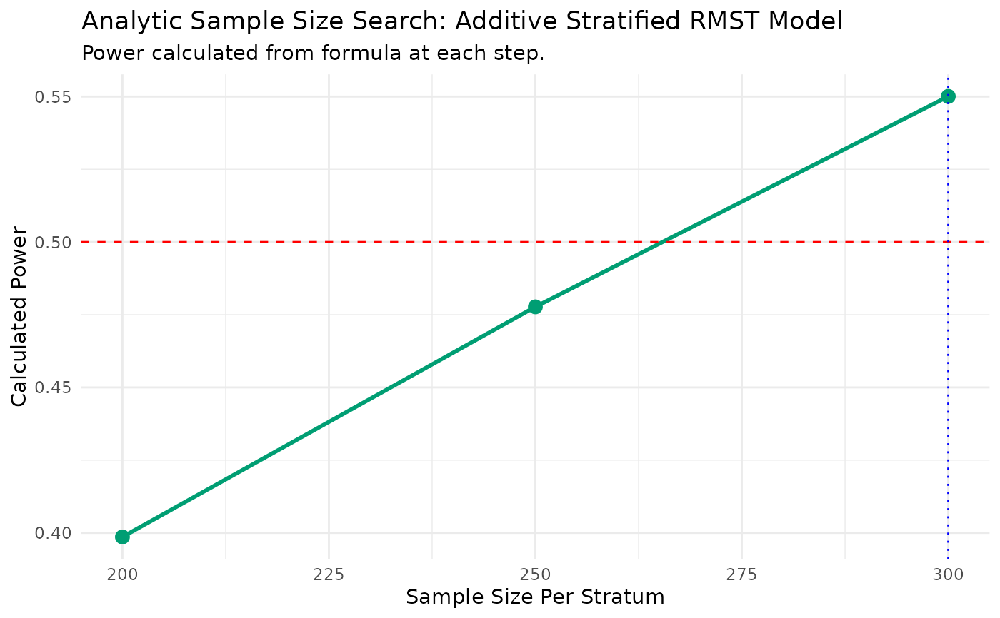

Find Sample Size for a Stratified Additive RMST Model (Analytic)
Source:R/additive_stratified_analytical.R
additive.ss.analytical.RdCalculates the required sample size for a target power using the analytic method for a stratified, additive RMST model.
Usage
additive.ss.analytical(
pilot_data,
time_var,
status_var,
arm_var,
strata_var,
target_power,
linear_terms = NULL,
L,
alpha = 0.05,
n_start = 50,
n_step = 25,
max_n_per_arm = 2000
)Arguments
- pilot_data
A
data.framecontaining pilot study data.- time_var
A character string for the time-to-event variable.
- status_var
A character string for the event status variable (1=event, 0=censored).
- arm_var
A character string for the treatment arm variable (1=treatment, 0=control).
- strata_var
A character string for the stratification variable.
- target_power
A single numeric value for the desired power.
- linear_terms
An optional character vector of other covariate names.
- L
The numeric value for the RMST truncation time.
- alpha
The significance level (Type I error rate).
- n_start
The starting sample size per stratum for the search.
- n_step
The increment in sample size at each step of the search.
- max_n_per_arm
The maximum sample size per stratum to search up to.
Value
A list containing:
- results_data
A
data.framewith the target power and required sample size.- results_plot
A
ggplotobject visualizing the search path.- results_summary
A
data.framesummarizing the estimated treatment effect.
Details
This function performs an iterative search for the sample size required to
achieve a specified target_power. It uses the same underlying theory as
additive.power.analytical, based on stratum-centering of covariates. It performs
a one-time estimation of the additive treatment effect and its asymptotic variance
from the pilot data, then uses these parameters in an analytic formula to
efficiently find the required sample size.
Examples
set.seed(123)
pilot_df_strat <- data.frame(
time = rexp(150, 0.1),
status = rbinom(150, 1, 0.8),
arm = rep(0:1, each = 75),
region = factor(rep(c("A", "B", "C"), each = 50)),
age = rnorm(150, 60, 10)
)
# Introduce an additive treatment effect
pilot_df_strat$time[pilot_df_strat$arm == 1] <-
pilot_df_strat$time[pilot_df_strat$arm == 1] + 1.5
# Find the required sample size per stratum for 80% power
ss_results <- additive.ss.analytical(
pilot_data = pilot_df_strat,
time_var = "time", status_var = "status",
arm_var = "arm", strata_var = "region",
target_power = 0.50,
L = 18, #
n_start = 200,
n_step = 50,
max_n_per_arm = 1000
)
#> --- Estimating parameters from pilot data for analytic search... ---
#> --- Searching for Sample Size (Method: Additive Analytic) ---
#> N = 200/stratum, Calculated Power = 0.399
#> N = 250/stratum, Calculated Power = 0.478
#> N = 300/stratum, Calculated Power = 0.55
#>
#> --- Calculation Summary ---
#>
#>
#> Table: Required Sample Size
#>
#> | Target_Power| Required_N_per_Stratum|
#> |------------:|----------------------:|
#> | 0.5| 300|
print(ss_results$results_data)
#> Target_Power Required_N_per_Stratum
#> 1 0.5 300
print(ss_results$results_plot)
